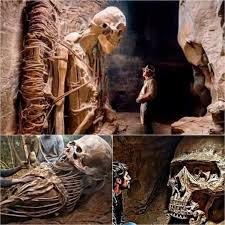
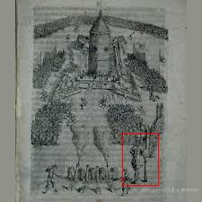

GIANT HUMAN
Introduction
Research
At first glance, one might think the boots are a kind of allegory... perhaps a symbol of proletarian strength. But is that truly the case? Or are we looking at material evidence of the existence of people of gigantic proportions?
lt’s analyze the photograph: How tall would the wearer of these boots have to be? Based on proportions visible in the image: The boots appear to be approximately 55-59 inches tall, reaching up to the man’s shoulders (his height is around 5 ft 7 in). The foot length of the boots seems to be about 27-31 inches. If we apply standard human body proportions, the person these boots were made for would likely have been between 11.5 and 14.7 feet tall!

of Charles Byrne, known as "the Irish Giant" Charles Byrne, a man who lived in the 18th century, had a remarkable height of 8 ft 4 in.

His skeleton was exhibited at the Hunterian Museum in London starting from 1799 until it was eventually removed from public display in 2023 Unfortunately, little is known about Byrne's family, except that his parents were ordinary individuals and not exceptionally tall. According to some sources, Byrne's father worked as a weaver, while his mother may have had Scottish origins.
In Caves of Euphrates River a team of Archaeologists discovered a each skeleton measured well over 12 feet in length, with bones that were thicker and sturdier than those of any known human species. Early analysis suggests that these beings could have lived thousands of years ago, perhaps even predating known civilizations like Sumer or Akkad. What is even more fascinating is the condition of the remains—so well preserved that some researchers speculate this cave may have been a burial chamber of great significance to an ancient people. Due to the magnitude of the discovery, the cave was immediately sealed off by authorities. Experts from around the world have been called in to study the findings, and governments are taking unprecedented precautions to protect this site from looters or those seeking to exploit its mysteries. There are whispers of what the true implications of this find could be—not just for archaeology, but for our understanding of history, humanity, and even the natural world.

A 17th-century engraving depicts a Giant as the commander of a siege in this mysterious engraving I found in Russian archives
Considering the arrangement of the troops in the image, it appears the giant is directing the attack strategy, while the armies in front of him are carrying out his plan.

Skeletons of GIANTS as decoration of the Basilica of San Lorenzo in Florence, Italy
Here we have a compilation of 17th-century engravings that depict fascinating scenes: skeletons of giants that decorate the exterior and interior of the Basilica of San Lorenzo in Florence.
One might think these could be statues, but pay attention to the anatomy and details. The skeletons look very realistic, as if they belong to the remains of exceptionally tall humans. What makes this depiction even more intriguing is the fact that these skeletons are in armor and decayed clothing, with preserved hair.

The "Encyclopedia of Ancient Giants in North America" chronicles two distinct waves of giant humans migrating to North America.
As early as 7,000 B.C., strange people arrived on the North American shores of gigantic size. Their spread across the American landscape is documented not only by their massive skeletons but by an identical material culture that was found buried with their remains.At the advent of the Bronze Age another migration of giant humans found their way to North America. A persistent legend exists with Native Americans of a people who came to trade and mine the copper from the Upper Great Lakes.

The oral legend was recorded by a David Cusick in his book; "Sketches of the Ancient History of the Six Nations" is a mytho-historical narrative about the Iroquois Confederacy of six tribes: the Mohawk, Oneida, Onondaga, Cayuga, Seneca and, later, the Tuscarora.
The Stonish Giants were believed by the Iroquois to be an ancient group of gigantic men, who would roll themselves in mud, which became stone so strong their arrows would simply bounce off. The giants attacked the original Six Nations of the Northeastern America’s, but after a brutal war were forced back into the wilderness